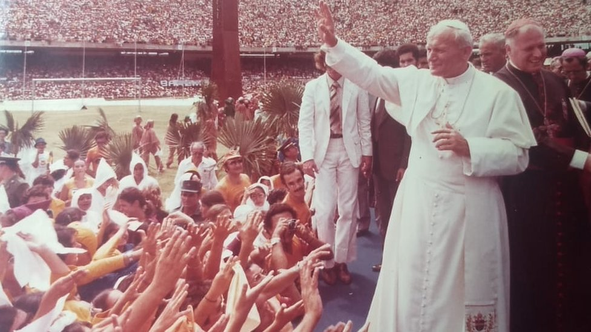
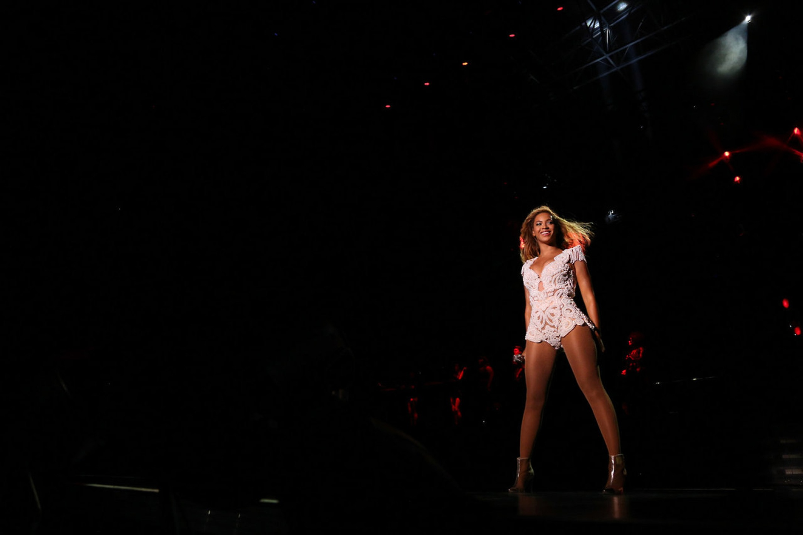
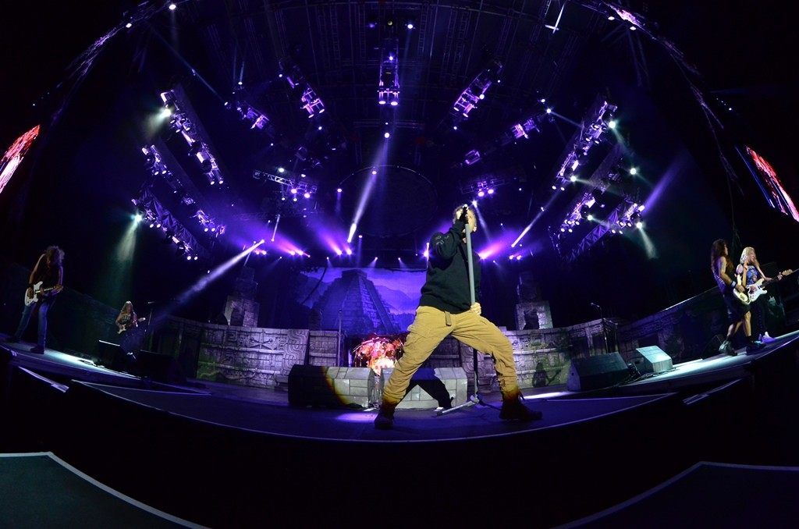
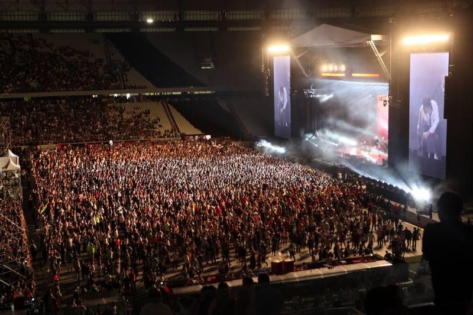

Arena Castelão was handed over to the people of Ceará on December 16, completely revitalized. Dating back to 1973, the stadium was the stage for matches of the
Confederations Cup and the 2014 World Cup. To carry out the renovation, investments of R$ 518.6 million and 2,000 employees hired by the consortium were required
formed by Construtora Andrade Mendonça and Galvão Engenharia. The transformation involved works to renovate, expand and modernize the facilities, with the aim of
to modernize, but also maintain the historical characteristics of the place.
The spotlight on the Arena is all possible. Castelão is home to the three biggest teams in Ceará and where the main matches of these groups are held. further still
it was the stage for many concerts by national and international artists, such as Beyoncé, Iron Maiden and ex-Beatles Paul McCartney.
The spotlight on the Arena is all possible. Castelão is home to the three biggest teams in Ceará and where the main matches of these groups are held. further still
it was the stage for many concerts by national and international artists, such as Beyoncé, Iron Maiden and ex-Beatles Paul McCartney.

Pope John Paul II, on July 9, 1980, being the first to visit the country.

American singer Beyoncé, in her series of 5 concerts in Brazil, in 2013.

Show by the band Iron Maiden, with more than 25,000 people, in 2016.

Presentation of British composer Paul McCartney, in 2013. Musician used several typical expressions from Ceará, such as 'Vamos botar boneco' and 'Eita, mah'.
The most important game ever held in Fortaleza, Brazil beat Colombia 2-1. After six games in Fortaleza, with more than 60,000 people in Castelão and millions scattered throughout the city.